PEOPLE
Help designers grow.
At HSBC and NTT DATA, I have managed and mentored designers. Coaching and regular feedback sit alongside the responsibility to help people make progress in their work.
ABOUT MARIAN
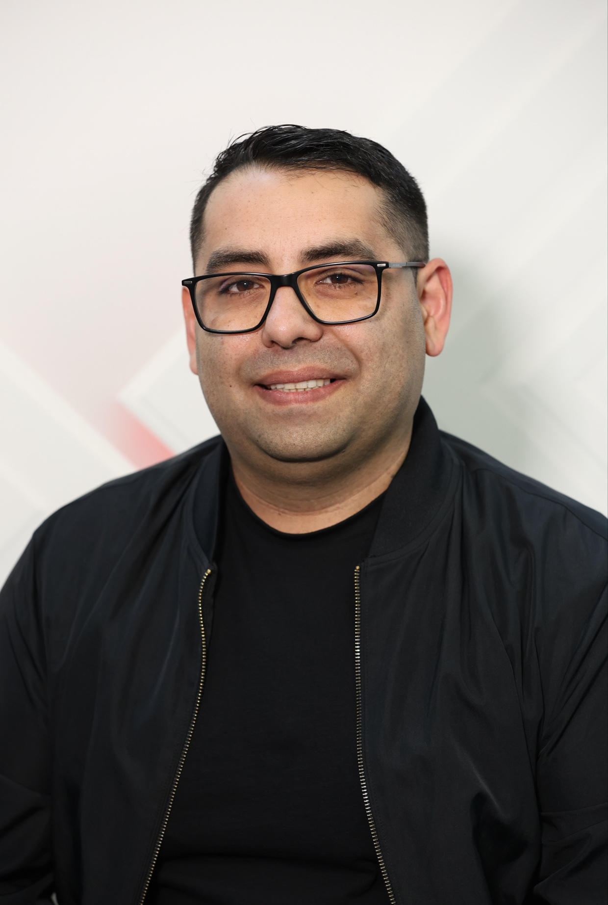
ENGINEERING → DESIGN → LEADERSHIP
My journey began in Romania, studying IT engineering and working as a front-end engineer. Building interfaces made me curious about the people using them—and why some experiences worked better than others.
That curiosity took me into digital design, then product design and leadership. Today I work across complex products, connecting user needs, business goals and the technology that brings an idea to life.
My work spans banking and finance, technology, telco, automotive and digital commerce. Each industry brings different users, business priorities and constraints to understand.
Connect on LinkedIn ↗LEADERSHIP IN PRACTICE
My leadership combines people management,
design quality and delivery partnership.
PEOPLE
At HSBC and NTT DATA, I have managed and mentored designers. Coaching and regular feedback sit alongside the responsibility to help people make progress in their work.
QUALITY
At HSBC, I establish design standards, review frameworks and quality benchmarks, helping teams make consistent decisions across enterprise platforms.
DIRECTION
I bring product, engineering and business stakeholders into design decisions, aligning priorities and carrying the intent through delivery.
Design leadership in Business Banking. Platform direction, team development and shared standards across product teams.
Internal enterprise tools, working with product and engineering from definition through design delivery.
Explore the project ↗Design leadership across client engagements, from early propositions to delivery, alongside managing and mentoring designers.
Explore the JLR concept ↗Operational platforms, connecting research, workflow design and user testing.
Explore the project ↗Earlier work includes UX contracts at Legal & General and Three UK, product design at Virgin Media, and eCommerce design and front-end implementation at Totaljobs.
Before that, I worked across digital design and development. That foundation still shapes how I collaborate with engineering and think about implementation.
Full experience on LinkedIn ↗MY PROCESS
The shape of the work changes.
The questions keep us focused.
Set a shared direction before starting the work. I bring teams together around the problem, the constraints and what success should mean.
Shared brief · Priorities · Ways of working
Research makes assumptions visible. I connect conversations, evidence and the existing experience to define the problem and identify where we can make a useful difference.
Research · Journey mapping · Problem framing
Ideas become tangible through flows, concepts and prototypes. I involve people early, test the important assumptions and refine the direction through feedback.
Prototypes · User feedback · Design systems
I work closely with engineering to carry the intent into the product. Delivery continues through implementation decisions, feedback and the next opportunity to improve.
Design partnership · Implementation · Iteration
MENTORSHIP
Focused conversations for the moments that matter in your design journey. Bring a real question, something you’re working on, or a direction you want to explore.
Build a clear story around the problem, your decisions and your contribution.
Practise your storytelling, talk through design challenges and find your confidence.
Think through a change of role, industry or direction with a fresh perspective.
Connect design decisions to user needs, product priorities and the wider business.
Explore influence, collaboration and the shift into senior or lead roles.
Bring a current project for specific feedback you can put into practice.
IN THEIR WORDS

Product Designer, The Access Group
“His experience and practical tips are things that will stick with me.”ADPList recommendation · Excerpt

Designer transitioning from textile to UX/UI
“he offered both practical guidance and meaningful encouragement, which gave me more confidence.”ADPList recommendation · Excerpt

Design lead, Swiftfood London
“The feedback was realistic, actionable, and grounded in real industry experience.”ADPList recommendation · Excerpt

UI designer, Kimolian
“Marian approached the challenge with calm professionalism, guiding me through selecting components and applying the right colours.”ADPList recommendation · Excerpt

Product Designer, TossBank
“Marian is the most practical and respectful mentor I’ve ever met.”ADPList recommendation · Excerpt

UX Designer and Researcher, Conversio
“He is very knowledgeable but also just easy to talk to.”ADPList recommendation · Excerpt

Product Designer, Safaricom Ethiopia
“His mentorship has given me a fresh outlook and the confidence to tackle my goals with clarity.”ADPList recommendation · Excerpt

Lead product designer, Dropbox (Ex Meta)
“His clear, actionable advice and supportive approach made a big impact.”ADPList recommendation · Excerpt

UX/UI Designer, Wide Group Srl
“He is honest, direct, and he gives suggestions that shift your perspective while sharing his deep knowledge.”ADPList recommendation · Excerpt

Senior Product Designer, National Australia Bank
“His detail-oriented approach to reviewing my case study was transformative.”ADPList recommendation · Excerpt

Postgraduate Student, Universitas Indonesia
“In overall, I found the meeting very insightful.”ADPList recommendation · Excerpt
ON THE BOOKSHELF
A few of the books that shape
how I think, design and lead.
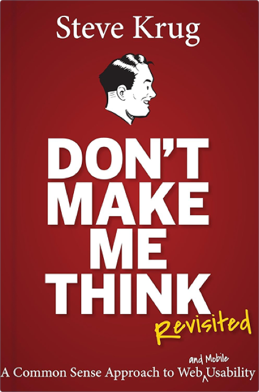
Steve Krug
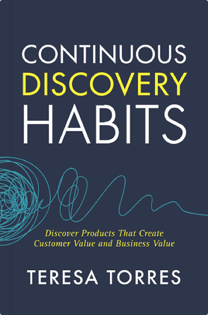
Teresa Torres
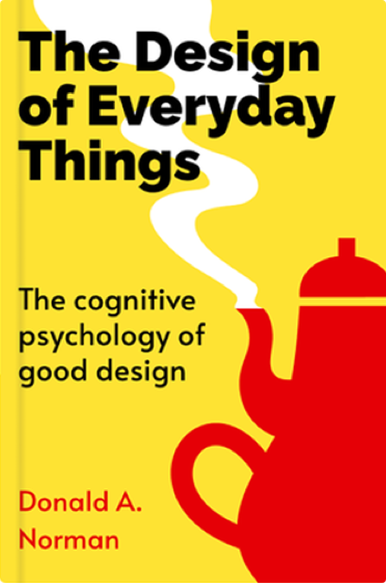
Donald A. Norman
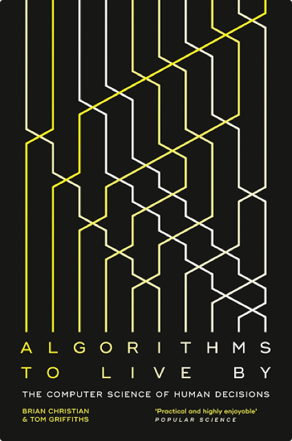
Brian Christian & Tom Griffiths
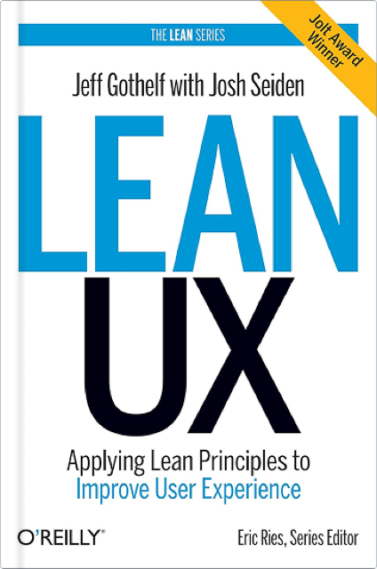
Jeff Gothelf
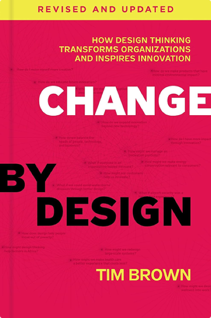
Tim Brown
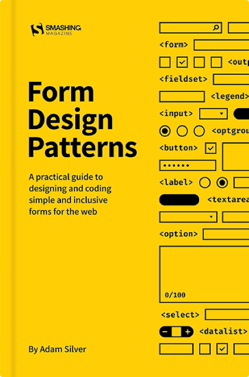
Adam Silver
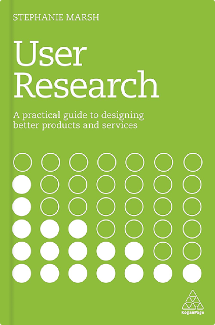
Stephanie Marsh
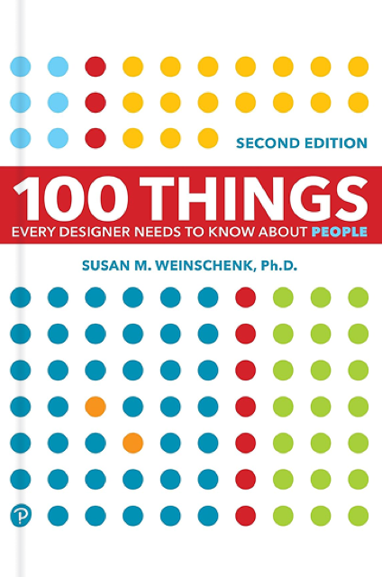
Susan M. Weinschenk
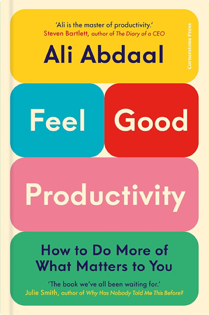
Ali Abdaal
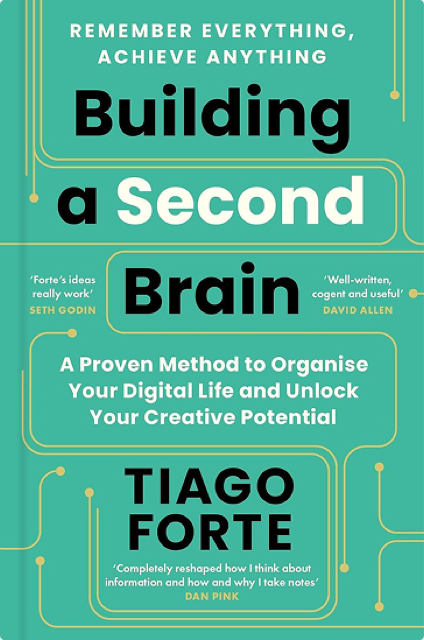
Tiago Forte
START A CONVERSATION
A new challenge, a shared curiosity,
or a different perspective. Let’s talk.